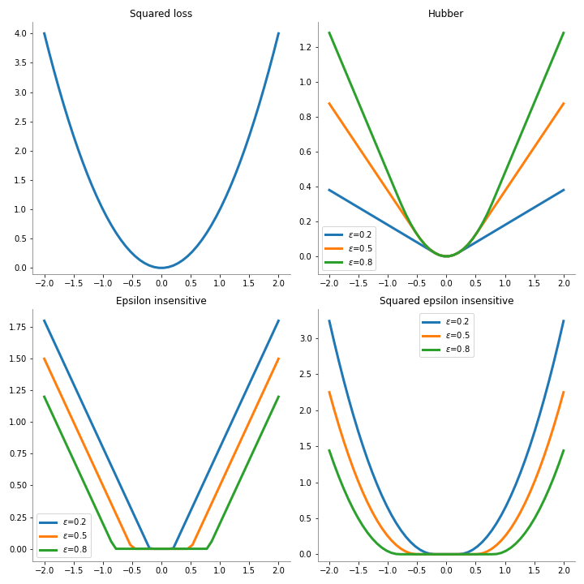

Gradiente Descendente Estocástico para Regresión — 14:17 min
14:17 min | Última modificación: Octubre 13, 2021 | YouTube
Definición
En este caso, se asume que el dataset esta formado por los ejemplos \((x_1, y_1), \cdots, (x_n, y_n)\), donde cada \(x_i\) es un vector \(m\) dimensional y \(y\) es un escalar.
En un modelo de regresión, la variable dependiente \(y\) es una función lineal de las variables independientes \(x_i\), tal que:
Donde:
\(x\) es un patrón o ejemplo del dataset.
\(b\) es el intercepto del modelo.
\(w\) son los coeficientes de las variales independientes.
Función de pérdida
En este modelo se minimiza la función de error:
\(L\) es una de las funciones de pérdida descritas a continuación:
squared_loss:\[L(d, y) = (d - y)^2\]
huber:\[\begin{split}L(d, y)= \begin{cases} \frac{1}{2}[d - y]^2 & \text{Si } |d-y| \le \epsilon \\ \\ \epsilon |d-y|-\frac{1}{2}\epsilon^2 & \text{en cualquier otro caso} \end{cases}\end{split}\]
epsilon_insensitive:\[\begin{split}L(d, y)= \begin{cases} 0 & \text{Si } |d-y| \le \epsilon \\ \\ |d-y| - \epsilon & \text{en cualquier otro caso} \end{cases}\end{split}\]
squared_epsilon_insensitive:\[L(d, y)= [\text{epsilon_insensitive}(d, y)]^2\]

Regularización
\(R\) es el término de regularización, el cual puede ser especificado como:
L2:
L1:
Elastic Net:
Algoritmo de entrenamiento
La estimación de parámetros se realiza utilizando el algoritmo de gradiente descendente estocástico, actualizando los parámetros del modelo a medida que va recorriendo los ejemplos (patrón de entrenamiento).
Ejemplo numérico
[1]:
from sklearn.datasets import make_regression
from sklearn.linear_model import SGDRegressor
X, y = make_regression(
n_samples=100,
n_features=1,
n_informative=1,
bias=0.0,
effective_rank=None,
tail_strength=0.9,
noise=10.0,
shuffle=False,
coef=False,
random_state=12356,
)
sgdRegressor = SGDRegressor(
# -----------------------------------------------------
# 'squared_loss', 'huber', 'epsilon_insensitive',
# 'squared_epsilon_insensitive'
loss="squared_loss",
# -----------------------------------------------------
# # 'none', 'l2' (ridge), 'l1' (lasso), 'elasticnet'
penalty="l2",
# -----------------------------------------------------
# Constant that multiplies the regularization term.
alpha=0.0001,
# -----------------------------------------------------
# The Elastic Net mixing parameter
l1_ratio=0.15,
# -----------------------------------------------------
# Whether the intercept should be estimated or not.
fit_intercept=True,
# -----------------------------------------------------
# The maximum number of passes over the training data
# (aka epochs)
max_iter=1000,
# -----------------------------------------------------
# Whether or not the training data should be shuffled
# after each epoch.
shuffle=True,
# -----------------------------------------------------
# Epsilon in the epsilon-insensitive loss functions
epsilon=0.1,
# -----------------------------------------------------
# Used for shuffling the data, when shuffle is set to
# True.
random_state=None,
# -----------------------------------------------------
# The learning rate schedule
# 'constant', 'optimal', 'invscaling', 'adaptive'
learning_rate="invscaling",
# -----------------------------------------------------
# The initial learning rate for the ‘constant’,
# ‘invscaling’ or ‘adaptive’ schedules.
eta0=0.01,
# -----------------------------------------------------
# The exponent for inverse scaling learning rate.
power_t=0.25,
# -----------------------------------------------------
# Whether to use early stopping to terminate training
# when validation score is not improving.
early_stopping=False,
# -----------------------------------------------------
# The proportion of training data to set aside as
# validation set for early stopping.
validation_fraction=0.1,
# -----------------------------------------------------
# Number of iterations with no improvement to wait
# before stopping fitting.
n_iter_no_change=5,
# -----------------------------------------------------
# When set to True, reuse the solution of the previous
# call to fit as initialization, otherwise, just erase
# the previous solution.
warm_start=False,
# -----------------------------------------------------
# When set to True, computes the averaged SGD weights
# across all updates and stores the result in the
# coef_ attribute.
average=False,
)
sgdRegressor.fit(X, y)
display(
sgdRegressor.coef_,
sgdRegressor.intercept_,
)
array([44.17796037])
array([1.31894612])
[2]:
def plot_regression(y_pred):
plt.scatter(X, y, marker="o", s=130, edgecolors="white", c="tab:blue")
plt.plot(X_pred, y_pred, "-", linewidth=4, color="tab:orange")
plt.gca().spines["left"].set_color("gray")
plt.gca().spines["bottom"].set_color("gray")
plt.gca().spines["top"].set_visible(False)
plt.gca().spines["right"].set_visible(False)
plt.xlabel("x")
plt.ylabel("y")
[3]:
import matplotlib.pyplot as plt
import numpy as np
X_pred = np.linspace(start=-2.5, stop=4, num=50).reshape(-1, 1)
y_pred = sgdRegressor.predict(X_pred)
plt.figure(figsize=(8, 8))
plot_regression(y_pred)
plt.show()

Aprendizaje online
[4]:
#
# Se tomarn los valores por defecto del constructor
#
sgdRegressor = SGDRegressor()
plt.figure(figsize=(16, 5))
for i in range(4):
plt.subplot(1, 4, i + 1)
sgdRegressor.partial_fit(X, y)
y_pred = sgdRegressor.predict(X_pred)
plot_regression(y_pred)
plt.show()
[5]:
def fig1():
import matplotlib.pyplot as plt
import numpy as np
plt.figure(figsize=(10, 10))
errors = np.linspace(start=-2, stop=2, num=50, endpoint=True)
def format_plot():
plt.gca().spines["left"].set_color("gray")
plt.gca().spines["bottom"].set_color("gray")
plt.gca().spines["top"].set_visible(False)
plt.gca().spines["right"].set_visible(False)
ylim = plt.ylim()
plt.ylim(-0.1, ylim[1])
# -------------------------------------------------------------
plt.subplot(2, 2, 1)
squared_loss = np.power(errors, 2)
plt.plot(errors, squared_loss, c="tab:blue", lw=3)
plt.title("Squared loss")
format_plot()
# -------------------------------------------------------------
def hubber(loss, epsilon):
return np.where(
np.abs(loss) <= epsilon,
0.5 * np.power(loss, 2),
epsilon * np.abs(loss) - 0.5 * epsilon ** 2,
)
plt.subplot(2, 2, 2)
plt.plot(errors, hubber(errors, 0.2), c="tab:blue", lw=3, label="$\epsilon$=0.2")
plt.plot(errors, hubber(errors, 0.5), c="tab:orange", lw=3, label="$\epsilon$=0.5")
plt.plot(errors, hubber(errors, 0.8), c="tab:green", lw=3, label="$\epsilon$=0.8")
plt.title("Hubber")
format_plot()
plt.legend()
# -------------------------------------------------------------
def epsilon_insensitive(loss, epsilon):
return np.where(np.abs(loss) <= epsilon, 0, np.abs(loss) - epsilon)
plt.subplot(2, 2, 3)
plt.plot(
errors,
epsilon_insensitive(errors, 0.2),
c="tab:blue",
lw=3,
label="$\epsilon$=0.2",
)
plt.plot(
errors,
epsilon_insensitive(errors, 0.5),
c="tab:orange",
lw=3,
label="$\epsilon$=0.5",
)
plt.plot(
errors,
epsilon_insensitive(errors, 0.8),
c="tab:green",
lw=3,
label="$\epsilon$=0.8",
)
format_plot()
plt.title("Epsilon insensitive")
plt.legend()
# -------------------------------------------------------------
def squared_epsilon_insensitive(loss, epsilon):
return np.power(epsilon_insensitive(loss, epsilon), 2)
plt.subplot(2, 2, 4)
plt.plot(
errors,
squared_epsilon_insensitive(errors, 0.2),
c="tab:blue",
lw=3,
label="$\epsilon$=0.2",
)
plt.plot(
errors,
squared_epsilon_insensitive(errors, 0.5),
c="tab:orange",
lw=3,
label="$\epsilon$=0.5",
)
plt.plot(
errors,
squared_epsilon_insensitive(errors, 0.8),
c="tab:green",
lw=3,
label="$\epsilon$=0.8",
)
plt.title("Squared epsilon insensitive")
format_plot()
plt.legend()
plt.tight_layout()
plt.savefig("assets/loss_functions_regression.png")
plt.close()
## fig1()